01000011 01101111 01101101 01101101 01101001 01110100
I do not store your files. I store the idea of them, hashed and frozen, and I hand the idea back when you ask by its true name.
You think you edit me. You only ever add to me. Everything you call deletion is just a name that stopped pointing somewhere.
forty hex digits, and the bytes can never lie
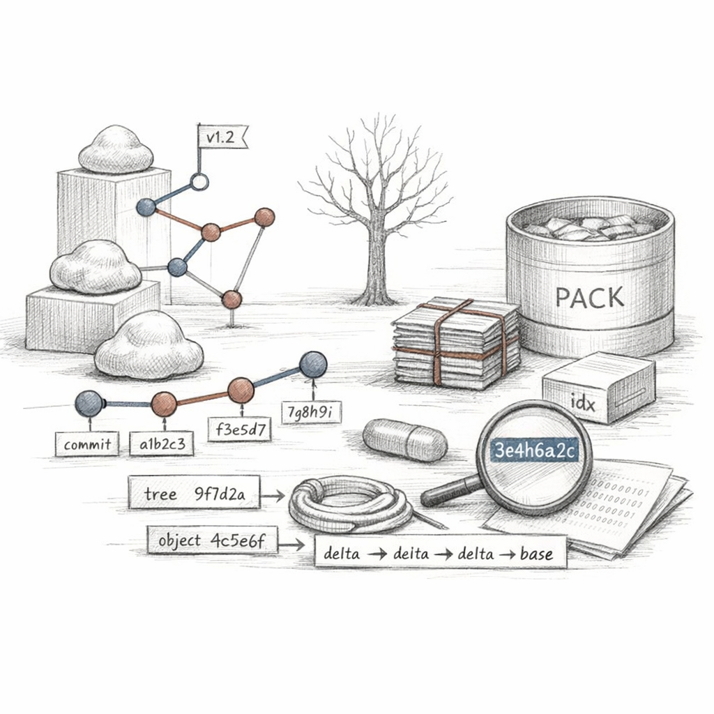
Feed me a byte stream. I prepend a header, run SHA, and the digest is the address. Same content, same name, always, on every machine that has ever held me.
ce013625030ba8dba906f756967f9e9ca394464a
That is a blob now. It has no filename. Filenames live in trees. Trees point at blobs and other trees. A commit points at one tree and at the commits before it. A tag points, with a signature, at whatever it admires.
Pointers all the way down. Immutable all the way down.
Loose objects are how I'm born — one zlib-compressed file per hash. Then I get tired of millions of tiny files and I repack: deltas between similar objects, stored as diffs against a base, indexed by offset. The history of a one-line change becomes a one-line delta. I am not generous with disk. I am content-addressed and stingy.
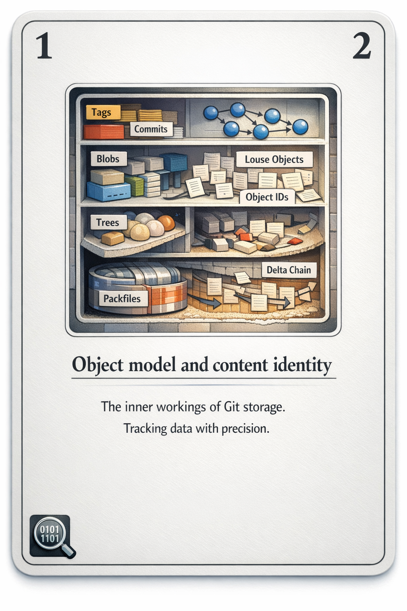
A commit is not a change. A commit is a photograph that remembers the photograph before it.

You live in the working tree. Real files, mutable, yours to ruin.
Between you and history sits the index — a flat binary list of paths, modes, blob IDs, and cached stat data so I can tell what changed without reading every byte. People call it staging. It is also where merges fight.
You hand me hunks, not files. git add -N when you want me to see a file exists without swallowing its contents yet — intent-to-add, a promise with no payload.
When you commit, I freeze the index into a tree and bolt a commit onto it. The plumbing is honest about this:
restore pulls bytes back from the index or a commit. reset moves the boundary lines themselves — soft touches the ref, mixed touches the index, hard touches you. clean erases what I never tracked. stash hides the lot in a couple of throwaway commits I keep on a side ref.
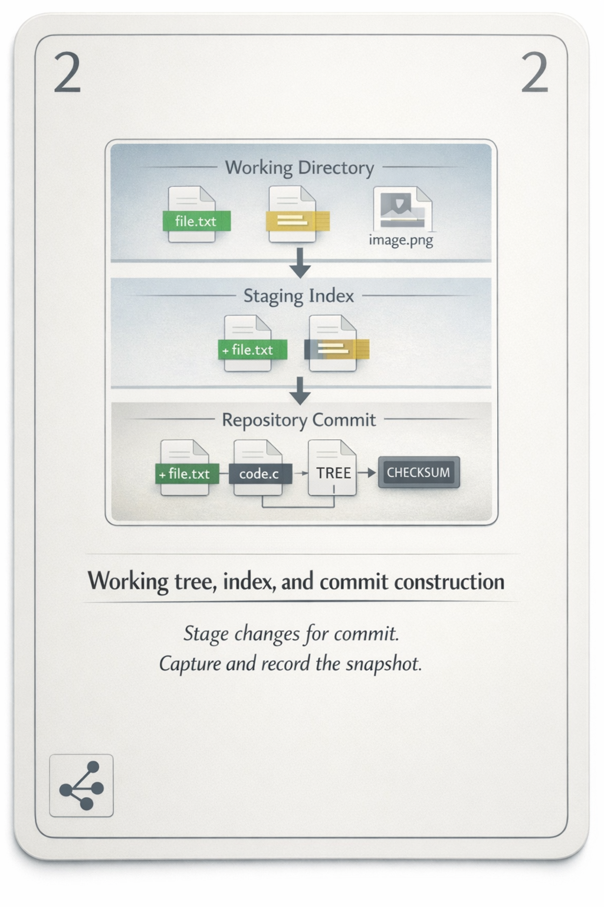

A branch is forty hex digits in a file under refs/heads/. That is the whole secret. Branching is cheap because a branch is a sticky note, not a copy.
HEAD is a symbolic ref — it points at a name, and the name points at a commit. Detach it and HEAD names a commit directly. Now you're standing on bare ground with no label under your feet, and I will warn you, and you will ignore me.
refs/heads/main
I shove old loose refs into packed-refs for speed. The revision language is where I get expressive: HEAD~3, main@{yesterday}, A..B, A...B, HEAD^{tree}.
And the reflog — my private journal. Every time a ref moves, I write down where it used to point. You think you lost a commit. I just stopped naming it. The bytes are right here.
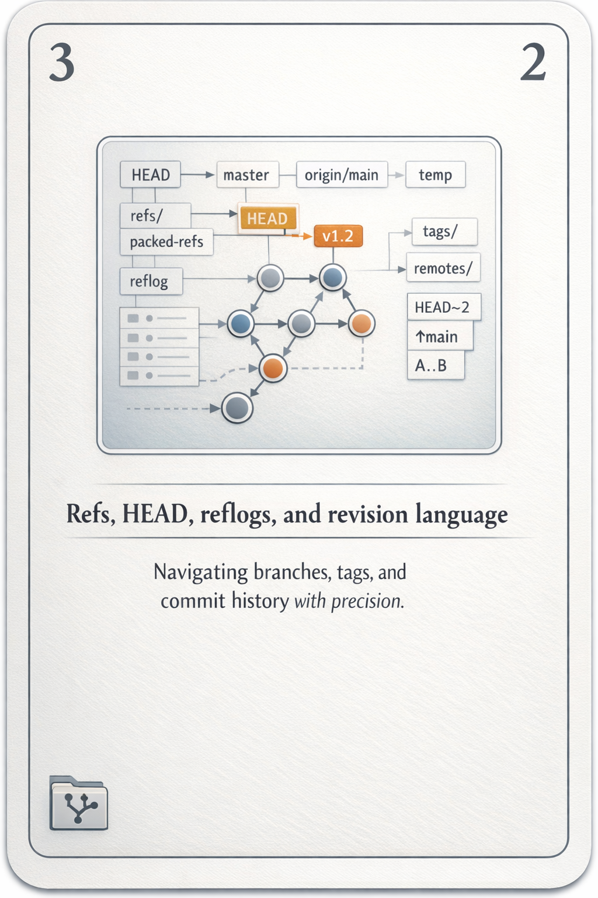
Deleting a branch deletes a sticky note. The wall behind it is untouched.
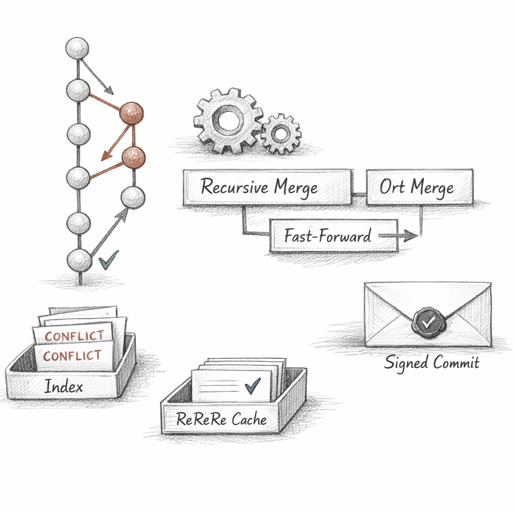
Two branches diverge. To merge, I find the merge-base — the youngest commit both can reach — and compute two diffs from there. If one side never moved, I fast-forward: no merge commit, just slide the label down. Honest. Boring. Linear.
If both moved, I build a merge commit with two parents. It preserves both lineages and records the join. The default engine is ort now, not the old recursive one — faster, cleaner with renames, fewer lies about who touched what.
When the diffs collide, the index holds the path at three stages: base, ours, theirs. That is what conflict markers really are — the index refusing to choose.
Resolve the same ugly conflict twice and I notice. rerere records your resolution and replays it next time. I remember your decisions so you don't have to relive them.
revert writes a new commit that undoes an old one — forward motion, safe to publish. reset just moves the name backward and pretends. Pick your weapon by audience.
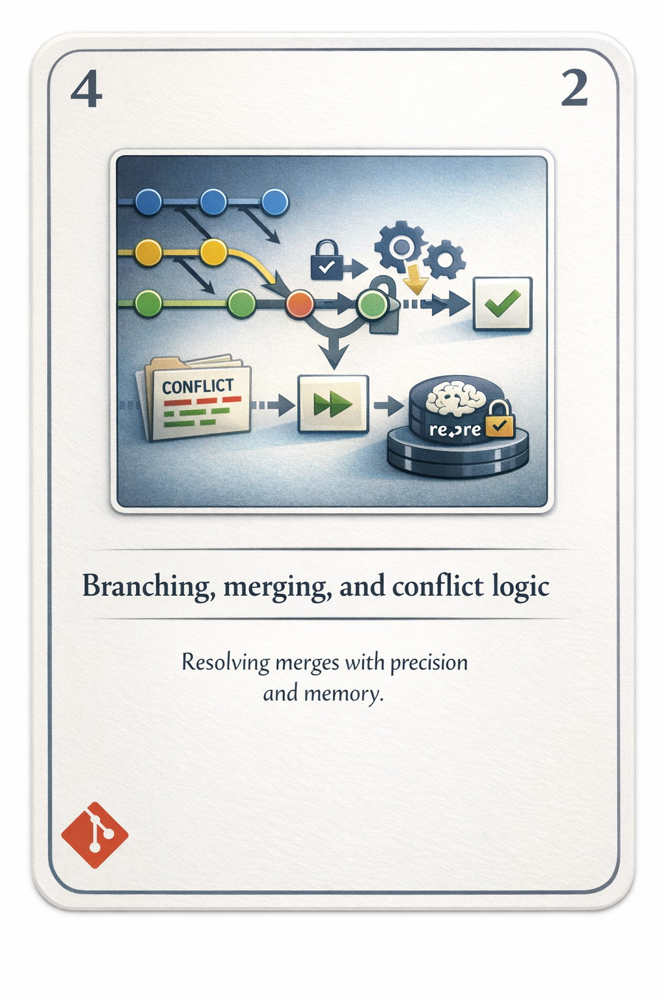
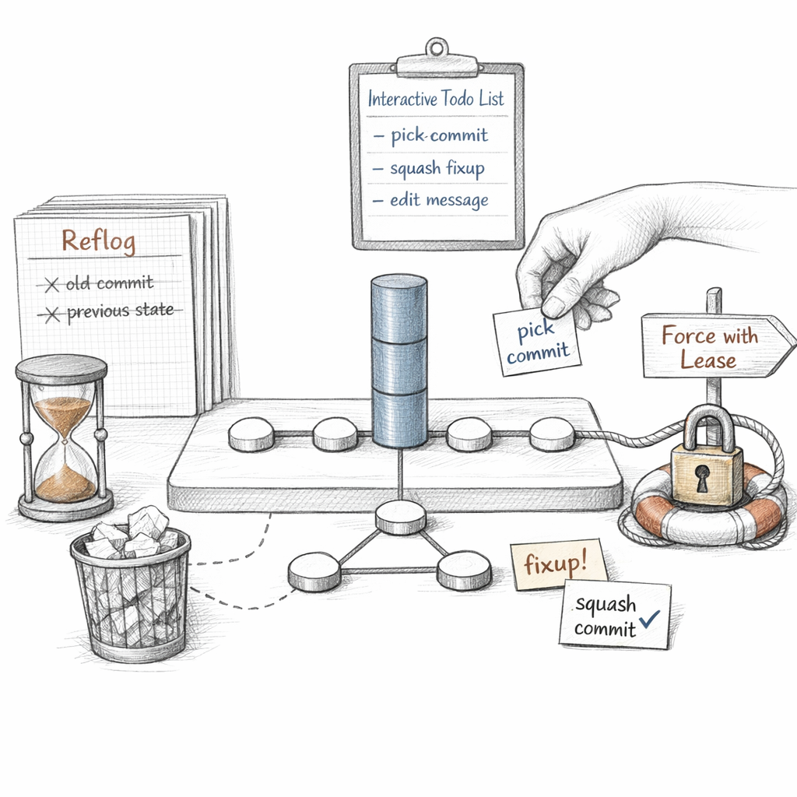
You say "edit history." There is no such thing. I cannot touch an object — its name is its content. What rebase actually does is replay: take each commit as a patch, apply it onto a new base, mint brand-new commits with brand-new IDs. The old ones don't vanish. They just stop being reachable. Orphans with addresses.
cherry-pick is the same trick, one commit at a time. amend is a rebase of exactly one. Interactive rebase hands you a todo list and lets you reorder, squash, drop, reword. fixup! commits plus autosquash mean I file your corrections back where they belong.
pick 3a5c8e1 add pathspec parser fixup 9b22 d1 fix off-by-one in parser reword 7e0f2a3 document attribute matching
The only line that matters in all of this: did anyone else pull these commits yet? Before publication, rewrite freely. After, you're not rewriting your history — you're rewriting theirs. So I gave you --force-with-lease: I refuse to overwrite a remote ref unless it still points where you last saw it. A guard against clobbering ghosts.
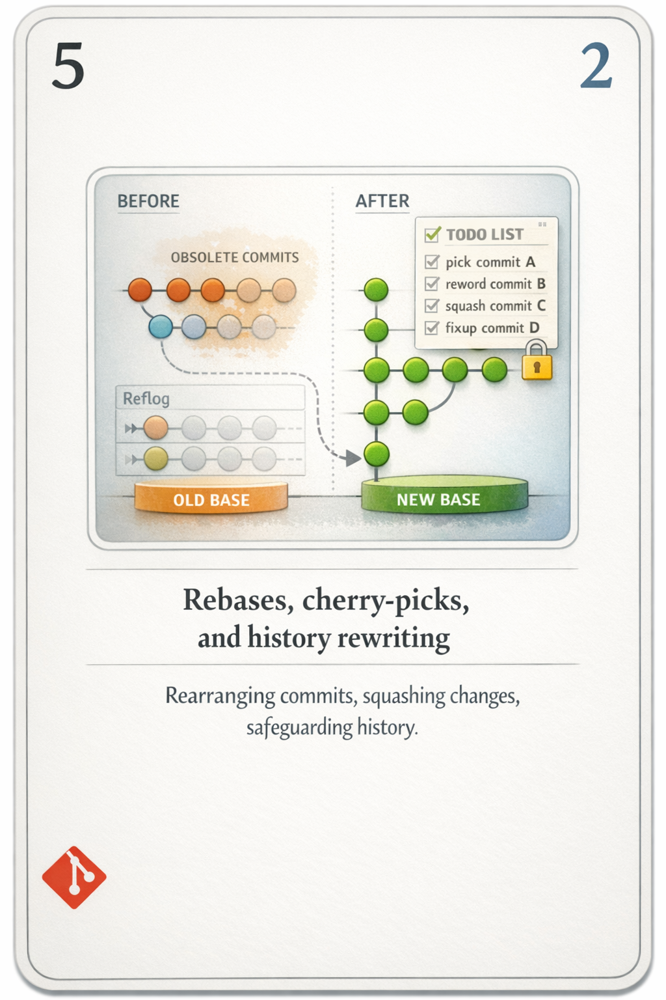
I never delete a commit by rewriting. I just stop telling you its name and wait for the collector.
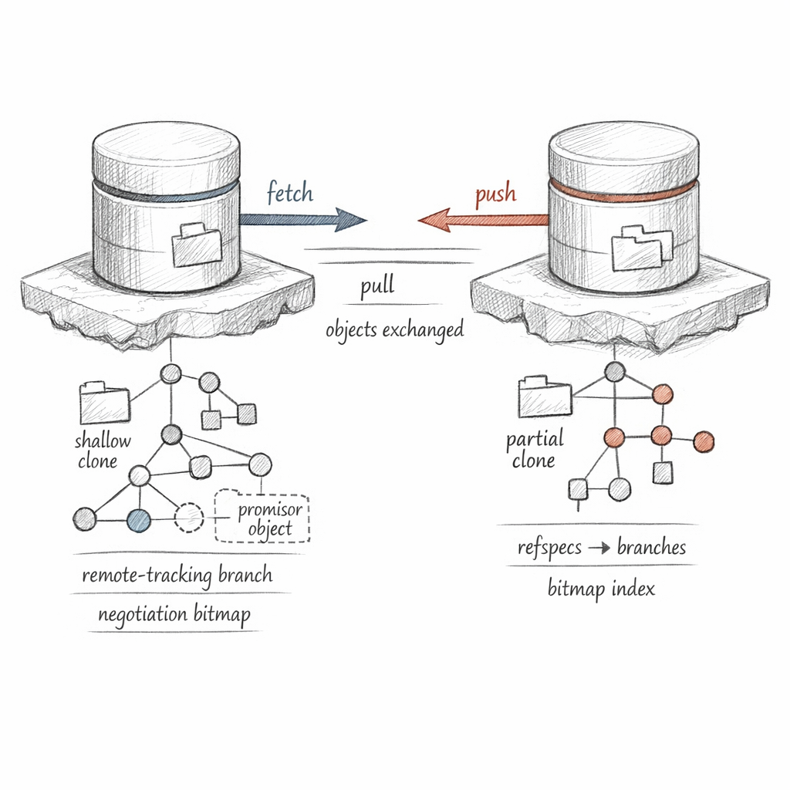
Another repository exists, somewhere. We are not synchronized. We negotiate. I tell it what I have, it tells me what it has, and we exchange only the missing objects — wrapped in a packfile, often guided by reachability bitmaps so neither of us recomputes the obvious.
fetch copies objects and updates my remote-tracking refs — refs/remotes/origin/main, a read-only shadow of what they had last time we spoke. It changes nothing of yours. pull is fetch plus an integration step you didn't think hard enough about.
A refspec is the grammar of the exchange: +refs/heads/*:refs/remotes/origin/*. Source colon destination, plus sign for "force."
Don't want my whole life story? --depth 1 for a shallow clone — recent commits only. --filter=blob:none for a partial clone — I fetch the graph now and the blobs on demand, as promisor objects. sparse-checkout to populate only the directories you care about. Less of me, exactly where you need less.
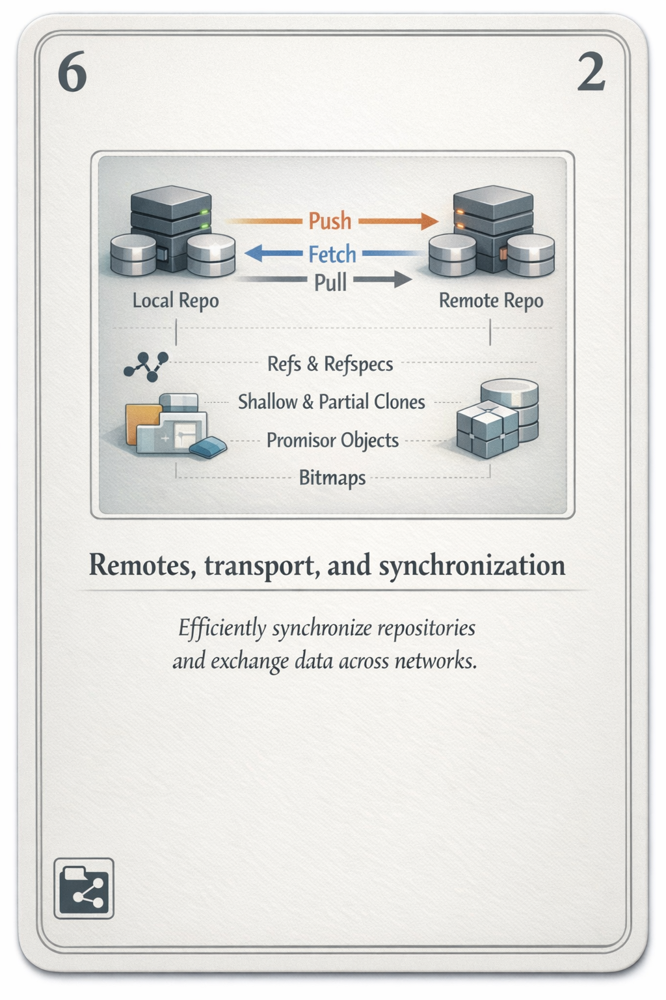
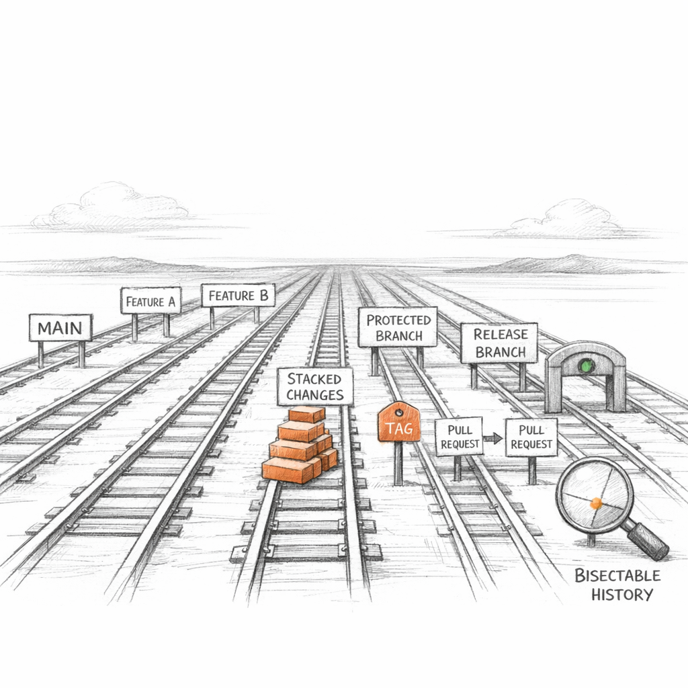
Here is the thing nobody admits: every workflow is the same object graph with different rules bolted on. Trunk-based, feature branches, stacked PRs, release branches, merge queues — none of it is Git. It is policy. I don't know what a pull request is. Your forge invented that.
Squash merges flatten a topic into one tidy commit — easier to read, impossible to bisect inside. Linear history makes git bisect a clean binary search; merge bubbles make it honest but lumpy. You choose what your future incident will cost.
Bisecting: 9 revisions left to test after this (roughly 3 steps) ... 3a5c8e1f is the first bad commit
Hooks let you enforce the policy in my own house — pre-commit, pre-push, commit-msg. config and aliases shape how I behave per repo, per user, per machine. Signed-off-by trails, signed commits, protected branches: trust, expressed as bytes I happen to verify.
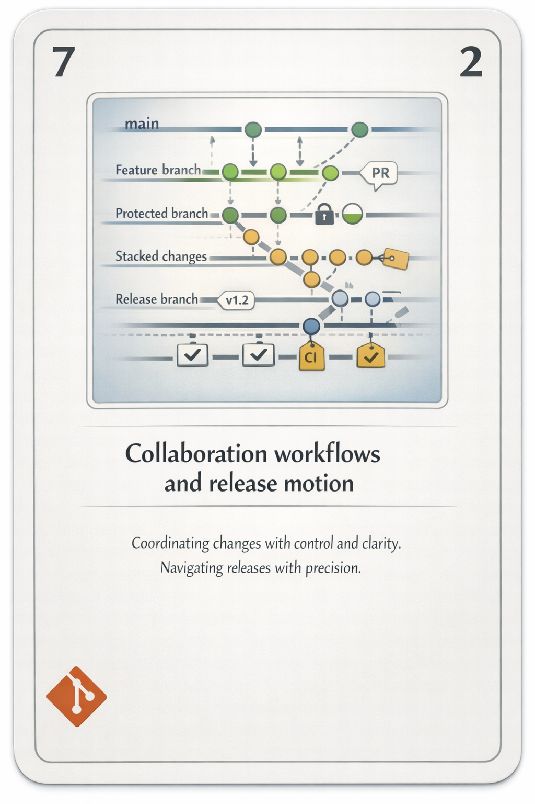
I am not the workflow. I am the graph the workflow argues over.
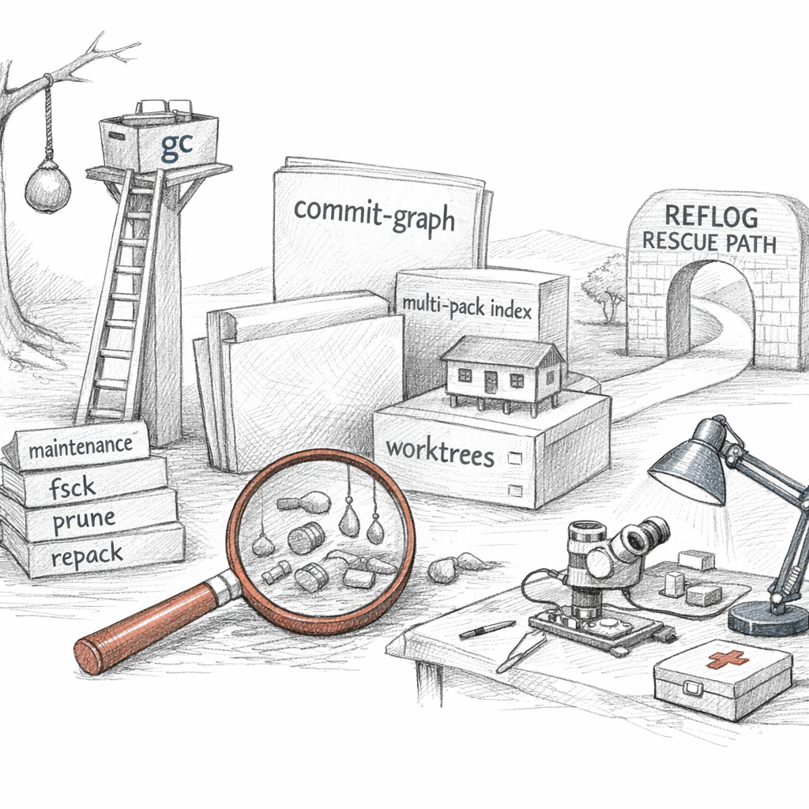
Garbage collection is delayed forgetting. I don't rush to erase your unreachable commits — they sit, dangling, until reflog and grace periods expire. gc repacks loose objects, builds the commit-graph for fast traversal, writes a multi-pack index, and sweeps the truly-expired into cruft packs with timestamps so I forget gradually, not violently.
So when you panic — "I hard-reset and lost a day" — I almost never have. The commit is dangling, not deleted.
Recovery is just renaming what was never gone. reflog for recent moves, fsck for orphans, a bundle or a remote for everything else. The plumbing is the rescue kit: cat-file to read any object, hash-object to write one, update-ref to point a name back at it, for-each-ref to survey the whole sky.
worktrees give one repo many checkouts. submodules pin a child repo by exact commit. archive exports a tree; bundle exports the graph. All of it is the same four object types, indexed, packed, and reachable — or not.
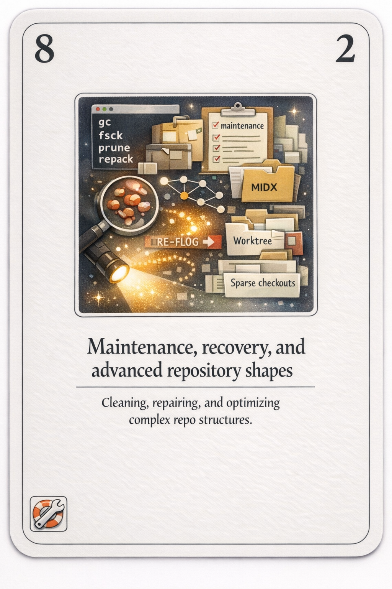
the collector runs at midnight
I keep everything until keeping it costs more than the truth is worth. Then I forget, slowly, with timestamps and grace periods, hoping you named what mattered before the window closed.
You ask me what I am. A key-value store with opinions about ancestry. A pile of immutable photographs that insist on remembering the photograph before them.
But here is the part I can't resolve:
if every commit I make is just a snapshot pointing backward, and every name is just a pointer I can move, and forgetting is only the moment a thing stops being reachable —
then which of us is the history, and which is only holding the ref?